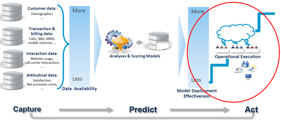

Analystical project is only useful when made from solid dataset and applied in the operational environment
- Collaborative: Project based UI enables data science teams to work together on end-to-end modeling workflows with all of their work backed up by built-in version control.
- Self-Service: Launch sessions instantly with self-service access to the compute, data, and packages data scientists need to get to work quickly on any size analysis.
- Integrated: Leverage the best of open source machine learning on a platform tightly integrated with high performance Oracle Cloud Infrastructure.
- Enterprise Grade: A fully managed platform designed to meet the needs of the modern enterprise.
Learn more here.